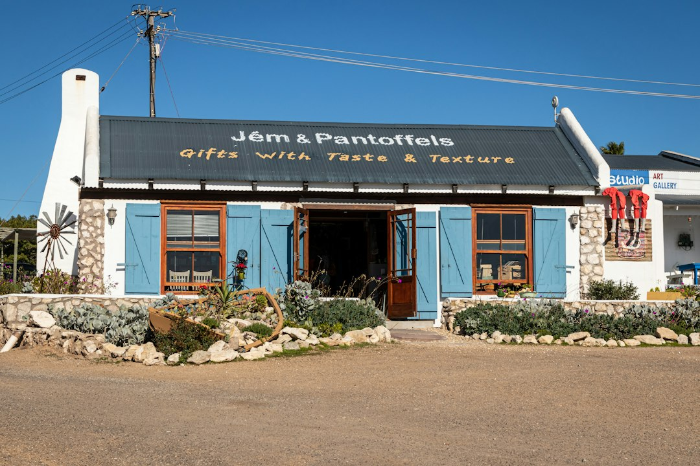

The directory presents 13 categories of cross-checked listings across Stanthorpe and the Granite Belt. Visitors can browse, read reviews, compare services and request quotes for free. Businesses can claim a free listing, while the Pro option is described as adding priority placement, photos and lead tracking. One featured finance listing states access to 100+ lenders, so finance enquiries should still confirm product fit, fees and contact process before acting.
For anyone using a stanthorpe business directory to narrow a local search, the useful question is how quickly the page helps you move from broad category to a credible shortlist.
Stanthorpe Business Directory Explained
Stanthorpe Directory is presented as a local directory for Stanthorpe and the Granite Belt, with cross-checked listings, reviews, service comparison and quote requests in one place. That makes it most useful when the job is already defined enough to choose a category, but not yet clear enough to contact one provider.
The practical value is the sequence. Start with the category that matches the job, then check whether the profile gives enough detail to compare service fit, location relevance, photos, reviews and direct contact options. A profile that only says the business exists is less useful than one that shows what it does, how customers have responded and how a quote can be requested.
The directory should not replace the final due diligence a buyer would normally do. Treat it as a shortlist builder. For trades, that may mean asking about availability, licence or insurance details where relevant, job scope and site access. For accommodation, hospitality or tourism, it may mean confirming dates, inclusions, cancellation terms and whether the experience matches the listing description.
Who this applies to
This guide applies to three groups. The first is a local resident looking for a practical supplier, such as a mechanic, plumber, electrician, painter, landscaper, hairdresser or accountant. The second is a visitor comparing accommodation, cafes, restaurants, wineries or local services before a trip. The third is a Stanthorpe business owner deciding whether to claim a free listing or consider the Pro option described on the directory.
Each group should use the page differently. A resident usually needs proof that the provider handles the specific job, can service the relevant location and is easy to contact. A visitor may place more weight on reviews, photos, category fit and the surrounding Granite Belt context. A business owner should check whether the listing presents the service clearly enough for searchers to choose it over a thin or outdated profile.
- Residents: compare service scope, reviews, quote options and direct contact details.
- Visitors: compare category fit, location relevance, photos and review signals.
- Business owners: check whether the listing explains services, photos and enquiry paths clearly.
How to compare listings without over-reading them
The published home page says users can read reviews, view photos and compare services and pricing. Those are helpful signals, but they need context. A strong review count can support confidence, while a small review set may still be useful if the service description is exact and the provider is clearly relevant to the job.
Use the ratings as a prompt for better questions, not as the whole decision. The page shows examples of listings with visible review scores and counts, including accommodation, mechanical services, wine tourism and hairdressing or beauty. That range matters because different categories need different checks. A cottage stay, a mechanical repair and a finance enquiry do not carry the same quote inputs or decision risks.
For a service quote, prepare a short brief before contacting anyone. Include the category, suburb or local area, timing, photos where useful, and the outcome you need. For accommodation or tourism, include travel dates and the number of people. For finance, ask what information is needed before any comparison is meaningful.
Listing options for local businesses
The directory invites Stanthorpe businesses to claim a free listing or upgrade to Pro. The home page describes Pro as adding priority placement, photos and lead tracking. That distinction gives business owners a simple starting point: decide whether a basic presence is enough, or whether enquiries would benefit from a fuller profile and better visibility.
A free listing can still be worthwhile if it keeps the business discoverable in the correct category. The basic requirement is clarity. The profile should state the service plainly, avoid vague descriptions and make the contact path obvious. Photos matter most where the buyer needs visual evidence, such as accommodation, landscaping, painting, hair and beauty, real estate or hospitality.
For businesses comparing directory exposure, the related business listings Stanthorpe guide is a useful companion because it frames the same discovery problem from the listing side. Read both views before deciding whether the current profile is only a citation, or whether it is doing enough to create a serious enquiry.
Local category choices that change the search
The directory lists accommodation, accountants, builders, cafes and restaurants, electricians, finance brokers, hairdressers and beauty, landscapers, mechanics, painters, plumbers, real estate and wineries. That spread is broad enough that searchers should avoid starting with a vague local query when a category path will be more precise.
Some decisions are urgent, such as a repair or trade enquiry. Others are comparison-led, such as accommodation, wineries, restaurants or real estate. Finance and accounting enquiries usually need more personal detail before any advice or quote is meaningful. The category choice should shape the first message you send.
- For trades, describe the job, access, timing and any photos that clarify the work.
- For visitor services, state dates, party size and the type of experience needed.
- For professional or finance categories, ask what documents or details are needed before options can be compared.
A useful Stanthorpe directory search ends with a shortlist that is small enough to contact properly, not a longer set of tabs to revisit later.
- Choose the category. Start with the published category that best matches the job, trip need or business service.
- Read the profile. Check the service description, photos, review signals and contact options before making a shortlist.
- Prepare the enquiry. Write one concise brief with location, timing, job details and any photos or dates that matter.
- Compare replies. Assess each response against the same scope so price, availability and service fit are easier to judge.
| Need | Best starting point | What to check before contact |
|---|---|---|
| Find a provider | Choose the closest service category | Reviews, photos, service wording and quote path |
| Compare visitor options | Use accommodation, cafes, restaurants or wineries | Dates, inclusions, location fit and review context |
| List a business | Claim a free listing or assess Pro | Category accuracy, photos, priority placement and lead tracking |
Common questions
Is the directory free for people searching for local businesses? Yes. The source page says visitors can browse listings, read reviews, compare services and get quotes for free.
How many categories are shown on the directory? The published page says it has 13 categories, including accommodation, accountants, builders, cafes and restaurants, electricians, finance brokers, mechanics, plumbers, real estate and wineries.
Can a Stanthorpe business add itself? Yes. The page invites businesses to claim a free listing and says a Pro upgrade can add priority placement, photos and lead tracking.
Should reviews be the main deciding factor? Reviews are useful, but they should be read with the service description, photos, category fit and quote response. The best shortlist is based on the job or trip you actually need, not only the highest visible score.
This guide covers how readers and local businesses can use the Stanthorpe directory categories, reviews, quote paths and listing options.